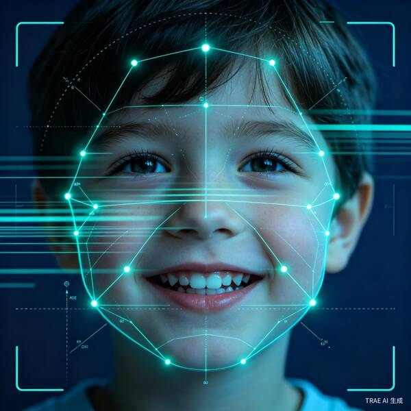
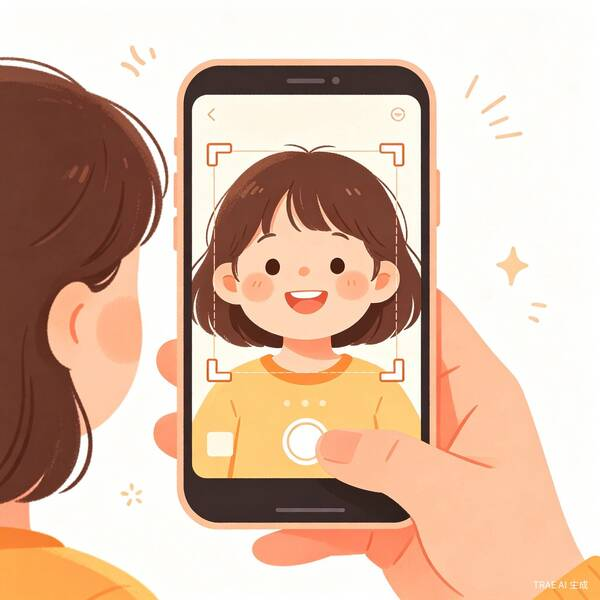
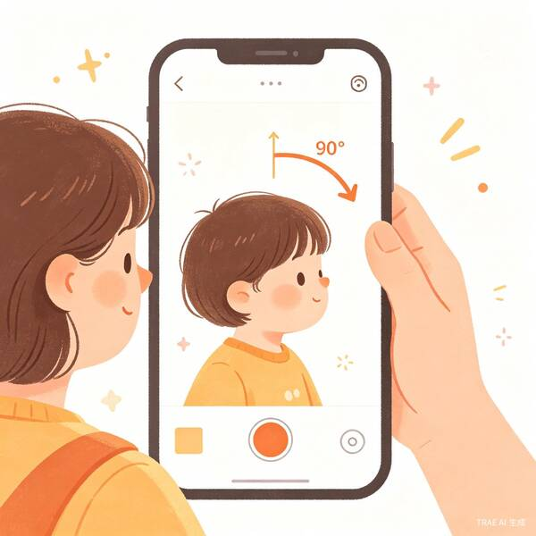

AI 儿童面型口腔智能筛查小程序
让每位家长都能成为孩子口腔健康的第一守护者
正面照、侧面照 + 15秒说话/咀嚼视频，AI 综合分析静态面型与动态口腔功能
3 秒识别反颌、深覆合、深覆盖、口呼吸、开颌、不良习惯、单侧咀嚼 7 大风险
每个筛查项目配有真实临床对比照片（儿童 vs 成人）和视频观察建议



作为口腔医学副教授，我在临床工作中发现一个普遍现象：80% 的错颌畸形患儿是在问题已经比较严重时才来就诊，而早期干预的成本仅为后期的 1/10。很多家长并非不重视，而是"不知道要看什么""不知道什么时候该看"。
AI 视觉识别技术的成熟让"家庭初筛"成为可能。我希望能把自己 20 年的临床经验"教给"AI，让它成为每位家长的"口腔健康顾问"。
痛点 1：信息不对称 — 家长缺乏口腔健康知识，无法判断孩子面型是否正常。
痛点 2：就诊门槛高 — 带孩子去口腔医院排队挂号成本高，轻微异常容易被忽视。
痛点 3：错过黄金期 — 3-5 岁是反颌矫治黄金期，6-12 岁是颌骨发育关键期，但多数家长后知后觉。
市场需求大：我国儿童错颌畸形患病率高达 70%+，但早期干预率不足 10%，市场教育空间巨大。
技术可行：MediaPipe Face Mesh 478 点面部 landmark 检测 + 深度学习分类，在移动端即可运行。
社会价值高："预防优于治疗"，早期筛查可大幅降低儿童正畸的复杂度和费用，减轻家庭负担。
产品形态轻：小程序无需下载，即用即走，家长接受门槛低，适合 C 端传播。
体验说明：
与 TRAE 多轮对话，明确产品定位（小程序）、核心功能（7 项筛查）、用户画像（3-12 岁家长）。确定了"拍照+视频 → AI 分析 → 科普报告"的核心流程。
用 TRAE 生成 5 屏交互原型：Splash → Home → Camera → Analyzing → Result。采用 iPhone 手机框设计，模拟真实小程序体验。
将临床知识（错颌分类、矫治黄金期、真实病例照片）整合到结果页。每个筛查项配有儿童/成人真实对比照片 + 视频观察建议。
根据反馈多次迭代：SVG 图标替换 emoji 保证跨平台兼容、多色卡片区分风险等级、真实临床照片替换 AI 生成图。
请替换为 TRAE 实际开发截图
请在 TRAE 中截取以下 4 张关键步骤截图，替换到 assets/ 目录：
以下 Session ID 对应 TRAE 中完成的关键开发任务，可在 TRAE 对话历史中搜索验证：
提示：请替换为 TRAE 中实际对话的 Session ID。双击 TRAE 对话即可复制 Session ID。
坑 1：Emoji 跨平台渲染不一致
最初用 emoji 做图标，在 Windows 上显示为空方框。解决方案：全部替换为 Inline SVG（Feather Icons 风格），确保所有平台一致。
坑 2：AI 生成照片被用户拒绝
第一次用 AI 生成"真实风格"的临床照片，被指出"不像真的"。解决方案：从权威医学网站（华西口腔、中华医学会、有来医生等）搜索并下载真实病例照片。
坑 3：Demo 与静态报告的内容割裂
最初 Demo 只有交互流程，缺少医学科普内容。解决方案：将静态报告中的图文分析以"可展开详情卡片"形式整合到结果页，兼顾交互体验与专业深度。
开发心得
TRAE 的最大价值在于"快速原型 → 快速迭代"。作为非前端专业的口腔医生，我能在几小时内完成一个可交互的 Demo，这在传统开发模式下是不可想象的。关键是：清晰表达需求 → 提供医学专业内容 → 让 TRAE 负责技术实现 → 反复测试反馈。